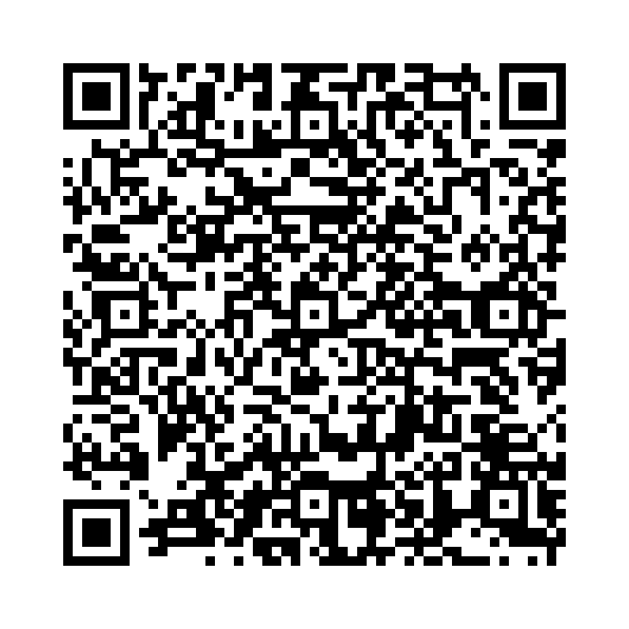

助動詞 Would は、「～だろう」「～するつもりだった」「丁寧な依頼」などを表します。
例文：
以下の単語を並び替えて正しい文を作成しましょう。（和訳を参考にしてください）

問題1: (like / I / a cup of tea / would) - 私は紅茶を一杯いただきたいです。
解答: I would like a cup of tea。
解説: 肯定文では「主語 + would + 動詞の原形」を使います。
問題2: (the window / you / would / mind / opening / ?) - 窓を開けていただけますか？
解答: Would you mind opening the window?
解説: 疑問文で「Would」を先頭に置きます。
問題3: (listen / he / would not / to the advice) - 彼はその助言に耳を貸そうとしませんでした。
解答: He would not listen to the advice。
解説: 否定文では「would not (wouldn’t)」を使います。
問題4: (to meet tomorrow / it / be / would / possible / ?) - 明日お会いすることは可能でしょうか？
解答: Would it be possible to meet tomorrow?
解説: 疑問文で丁寧に依頼を表現します。
問題5: (to visit / like / would / we / your home) - 私たちはあなたの家を訪れたいです。
解答: We would like to visit your home。
解説: 肯定文で「would like」を用いて希望を表します。